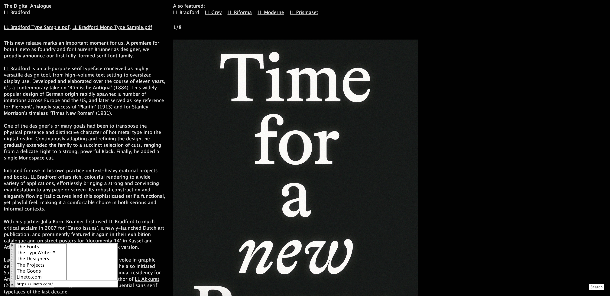
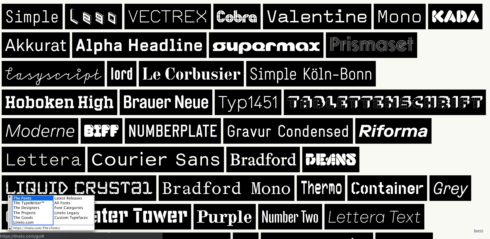
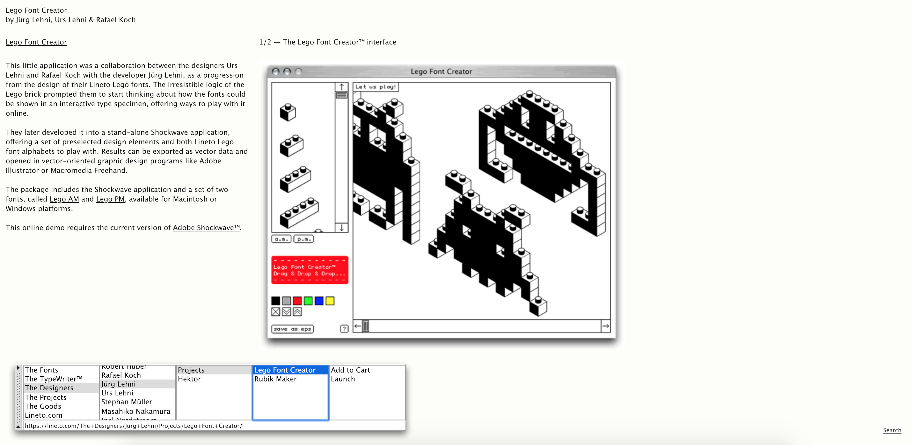
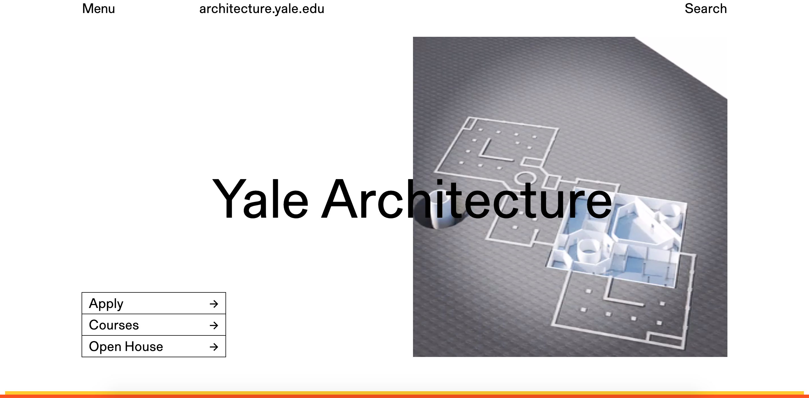
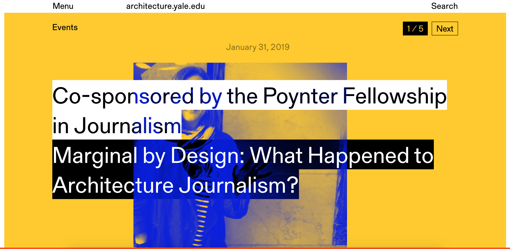
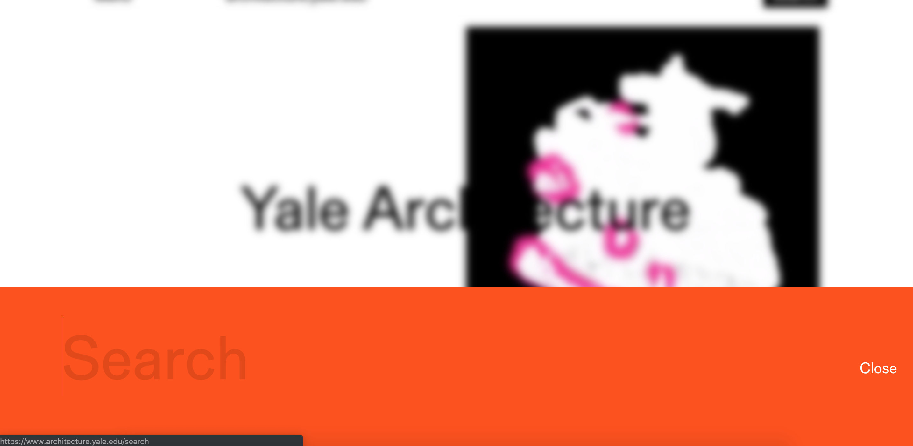
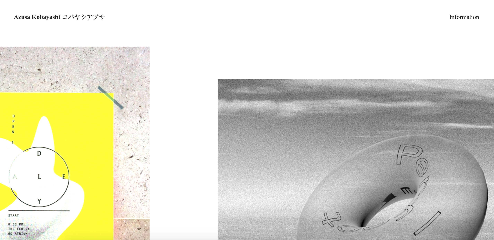
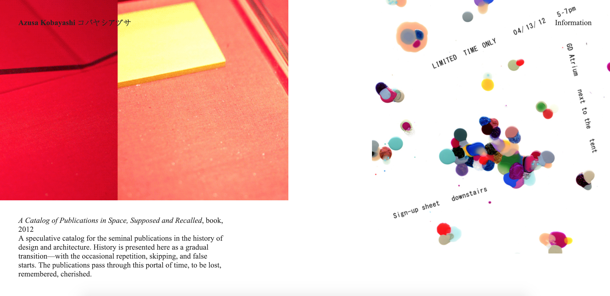
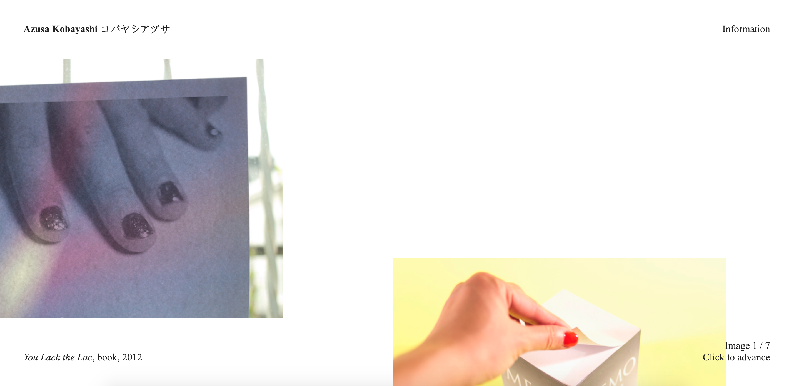

Lineto



- This is the official website for the type foundry Lineto
- It contains a library of original typefaces, as well as profiles for all of their designers.
- I think that the navigation for this website is very clever and efficient. The old-fashion style navigation box allows all of the different catagories to be divided neatly, making the navigation process very simple and straight forward for the user.
Yale Architechure



- This is the official website for Yale School of Architecture
- It provides all information on Yale School of Architecture, including courses, events, student work, etc.
- I think that the navigation for this website is really well designed. The navigation throughout the site is very simple and efficient, and the physical appearance of it is clean and aesthetic.
Azusa Kobayashi



- This is Azusa Kobayashi's official website
- This site features all of Azusa Kobayashi's works/projects.
- I think that the navigation for this website is really well designed, as well as being very unique. Having to scroll and actually move around the website allows the viewer to really explore the site. The large photos and hover descriptions provides a very physically pleasing experience apart from the navigation.